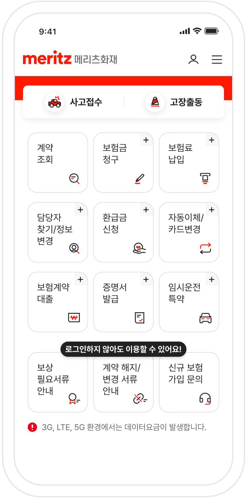

메리츠화재 영업가족을 위한 작은 작업실
01 DOCUMENT
필요한 표시를 더하고, 깔끔하게 전달하세요.
PDF 편집기를 열어보세요
편집기에서 PDF 파일을 선택하거나 놓아주세요
PDF 형식 · 새 탭에서 열림
02 IDENTITY
깔끔한 명함을 직접 만들어보세요.
03 EVERYDAY TOOLS
MERITZ FIRE
자주 찾는 연락처
MERITZ FIRE · ARS GUIDE
번호별 메뉴를 눌러 하위 안내를 확인하세요.
화면 메뉴를 눌러 이용할 수 있는 서비스를 확인하세요.

필요한 서비스를 선택해 신청 페이지로 이동하세요.
접수 방법을 확인하고 청구 서류를 내려받을 수 있습니다.